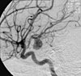

aneurysm

Definition: An aneurysm is an outward bulging, likened to a bubble or balloon, caused by a localized, abnormal, weak spot on a blood vessel wall. Aneurysms may be a result of a hereditary condition or an acquired disease. Aneurysms can also be a nidus (starting point) for clot formation (thrombosis) and embolization. As an aneurysm increases in size, the risk of rupture, which leads to uncontrolled bleeding, increases. Although they may occur in any blood vessel, particularly lethal examples include aneurysms of the Circle of Willis in the brain, aortic aneurysms affecting the thoracic aorta, and abdominal aortic aneurysms. Aneurysms can arise in the heart itself following a heart attack, including both ventricular and atrial septal aneurysms. There are congenital atrial septal aneurysms, a rare heart defect.
Source: Wikipedia
Wikipedia Page
Wikidata Page